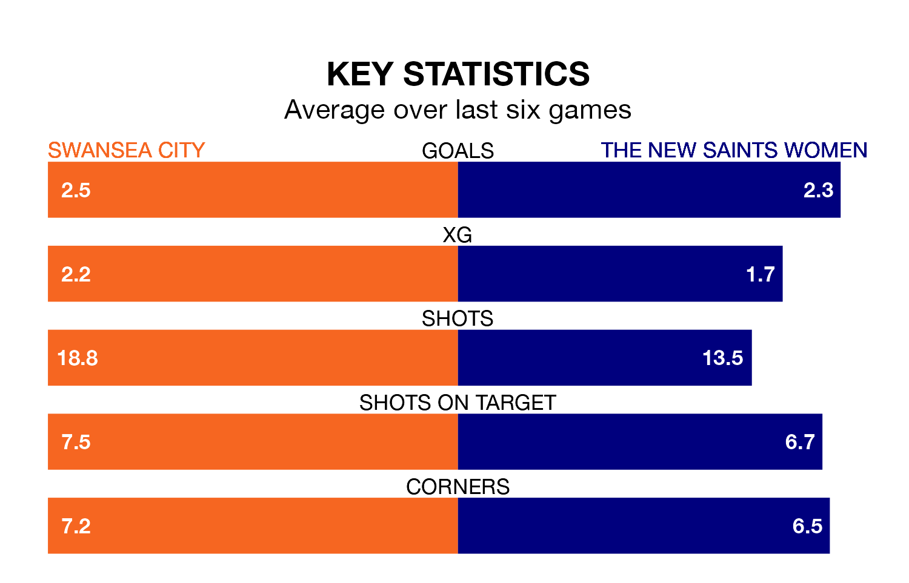

Swansea City host The New Saints Women in Sunday's early match looking to bounce back from defeat last time out in Welsh Premier Women's League.
The Swans, who sit second in the league after 11 games, fell to a 1-2 away defeat to Pontypridd Town on January 21.
They face a The New Saints side who also lost their last match, a 3-2 defeat to Wrexham Women, and who sit fourth in the table.
With 27 goals in 11 games so far this season, Swansea are the league's third-highest scorers with 2.5 goals per game. And they are conceding fewer than average, letting in 11 goals at a rate of 1.0 per game.
The New Saints are also above average scorers, with 2.4 goals per game, compared to a league average of 1.9. They have conceded 2.6 goals per game.
In the last 10 years, Swansea and The New Saints have played each other on seven occasions. Swansea won six of them and The New Saints one.
On average, the Swans scored 3.3 goals and the New Saints 1.3 in those matches.
Their last meeting was on October 22, when Swansea won 2-1 away.
City are in fantastic form in Welsh Premier Women's League, with five wins and one loss from their last six games.
With three wins and three losses over that period, the New Saints' form is much worse – they have taken nine points from 18, compared to the Swans' 15.
Updated: 08:51 (UTC), 25/01/24